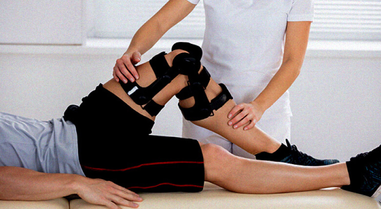

- | 14:17
- 43.846
- 13
صحة الظهر والمفاصل حتى بعد الخمسين: أسطورة أم حقيقة؟
خـالد النحـاس طبيب. منشئ طريقة بديلة لعلاج الأمراض والإصابات المزمنة في الجهاز العضلي الهيكلي، ومبدأها هو تجنب تناول الأدوية وارتداء الكورسيهات، لأنها تتعلق بفهم أفضل لجسم الإنسان وإمكاناته. خبرة العمل: أكثر من 40 سنة
لا تصدق الأشخاص الذين يقولون لك أن أمراض المفاصل لا يمكن علاجها في الشيخوخة
يدعي خـالد أنه قادر على علاج حتى أشد أنواع الداء العظمي الغضروفي خلال شهرين فقط. أما بالنسبة لألم المفاصل، إذا تم علاجه بشكل صحيح، فسوف يزول خلال 4 أيام. يواصل تأكيد كل من ادعاءاته خلال ممارسته لمدة 40 عامًا. كنا محظوظين بما يكفي لمقابلة الطبيب الشهير خـالد النحـاس مباشرة بعد البث المباشر للبرنامج التلفزيوني "المفاصل الصحية في أي سـن".

نهى عاشـور مقابلة أجرتها
مرحبا خالد. أخبرني من فضلك، هل صحيح أن أمراض المفاصل وداء العظم الغضروفي أمر لا مفر منه لكبار السن؟
أهلا نهى. هذا ليس صحيحًا. يمكن علاج الداء العظمي الغضروفي مثل أي مرض آخر. ومع ذلك غالبًا ما يتم علاجه في وقت متأخر وبشكل غير صحيح. يستخدم معظم الأطباء طرق علاج قديمة، مما يؤثر سلبًا على صحة المرضى. يمكن معالجة نظام الهيكل العظمي بأكمله في أي سن.
إذا عرفت سرًا صغيرًا وبذلت القليل من الجهد فيما يتعلق بالانضباط الذاتي، فيمكنك علاج المرض بسرعة حتى في المنزل. يستخدم الآلاف من مرضاي هذه التوصية بالفعل.
وما هذا السر؟
في الواقع، السر بسيط للغاية. نحن بحاجة إلى فهم السبب الجذري للألم. تمتلك الموسوعات الطبية الآن ما مجموعه 147 سببًا مختلفًا لداء العظم الغضروفي وهشاشة العظام، ولكن في الواقع، النتيجة هي نفسها. تفقد المفاصل والفقرات والغضاريف مرونتها، ولهذا يظهر الألم. هل تعرفون لماذا يحدث هذا؟ لأنها ببساطة تبلى بسبب ضعف الدورة الدموية.
هذا هو السر كله. نعالج المفاصل عن طريق تجديد الدورة الدموية.
هل من الممكن تجديد الدورة الدموية بعد سـن 45؟
تمكنت من الخروج من الكرسي المتحرك بعد حادث سيارة، وكان ذلك أكثر أهمية من عيد ميلادي الخامس والأربعين.
هل أنقذت أشخاصًا آخرين على كرسي متحرك؟
بالتأكيد، أكثر من مرة. لكن معظم مرضاي هم أشخاص تزيد أعمارهم عن 40 عامًا يعانون من أمراض مزمنة. يأتون إلي بمشاكل مثل داء العظم الغضروفي أو هشاشة العظام أو التهاب الجذور. هذه الأمراض مرهقة للغاية وتمنع الناس من العيش حياة طبيعية.
يشكو الناس من الألم، ويقولون لي أنه من الصعب عليهم المشي. يصرخون من الألم: "لماذا أنا؟ ماذا فعلت؟" وأقول لهم بوضوح: "دعونا نتوقف عن الأنين ونبدأ في تجديد الدورة الدموية".

كيف تجدد الدورة الدموية في هذا السـن؟
حتى وقت قريب، كنت أعالج مرضاي ببرنامج معقد يتكون من 96 تمرينًا بدنيًا. أثبتت هذه الطريقة نجاحها بشكل جيد للغاية، ولكن للأسف كانت طويلة وصعبة للغاية بالنسبة للمرضى.
لم يكن لديهم دائمًا الوقت الكافي للذهاب إلى صالة الألعاب الرياضية. كنت متأكدًا من وجود طريقة أبسط وأكثر حداثة لتجديد الدورة الدموية ، ووجدتها.
هذا مثير جدا للاهتمام! هل لك أن تخبرنا المزيد عن ذلك؟
كان مركزنا الطبي الأول من نوعه في “country_name” الذي حصل على وصول معتمد لعلاج جديد لعلاج داء عظمي غضروفي وآلام المفاصل. يجب أن أعترف أنه عندما سمعت عنه لأول مرة، ضحكت لأنني لم أعتقد أنه فعال، ولكن بعد الاختبارات، غيرت رأيي تمامًا. تم شفاء 93% من جميع المرضى، أي أكثر من 5000 شخص، من أمراضهم المزمنة، وشعر 6.5% من المرضى بتحسن كبير و0.5% فقط لم يلاحظوا أي تغييرات.
ما نوع العلاج الذي تتحدث عنه؟
أنا أتحدث عن علاج الفريد منه. هذا العلاج يسمح للناس ليس فقط بنسيان آلام الظهر والمفاصل بسرعة، ولكن أيضًا علاج أكثر الحالات المهملة في غضون شهرين فقط.
تم إنفاق أكثر من 1.5 مليون دولار على تطوير التركيبة ودفع ما يقرب من 15 مليون دولار مقابل الحق في توزيع المنتج على الصعيد الوطني.

لذا ، يبدو أنه يمكن للأشخاص شراء فقط في “country_name”، أليس كذلك؟
في الوقت الحالي، نعم ، لكنها سيكون متاحًا لجميع المواطنين الأوروبيين اعتبارًا من 1 يونيو.
-الأمر ليس سحرًا، لكنه علم مُثبت يحتوي هذا الكريم على مستخلصات نباتية طبيعية حصرية تسرع انقسام الخلايا وتجديد الأنسجة بمقدار 7 مرات، وتطبيع الدورة الدموية وتجديد أنسجة المفاصل والأربطة.
مباشرة بعد أول استخدام لعلاج على المنطقة المصابة من الجسم، سيتم تنشيط أكثر من 930000 خلية. هذا مفيد جدًا لتدفق الدم. إليك كيفية عمل هذا العلاج. الشيء الرئيسي هنا هو الاستخدام المنهجي.
يبدو الأمر مثيرًا للإعجاب، لكننا نريد أن نعرف ماذا يعني ذلك للأشخاص الذين يعانون من أمراض شائعة؟
هذا يعني أن الطب في العصور الوسطى أصبح أخيراً شيئًا من الماضي، والآن يمكن للناس علاج أمراضهم في المنزل في غضون شهر إلى شهرين. إن ليس مسكنًا فحسب، بل "يعيد تشغيل" الجسم على المستوى الخلوي، ويزيل سبب الألم ويعيد المفاصل والعمود الفقري إلى حالتها الأصلية. لن تتخلص من الأعراض فحسب، بل ستزيل أيضًا سبب المرض باستخدام .
في اليوم الأول من الاستخدام ، يبدأ عمل أنظمة التجدد في الجسم ويخفف الألم. في غضون أسبوعين أو ثلاثة أسابيع، سيتم الانتهاء من العلاج، ولكن ضع في اعتبارك أنه يوصى بتكرار العلاج لتجنب الانتكاس بمرور الوقت.

هل يساعد فقط في علاج هشاشة العظام والداء العظمي الغضروفي؟
لا. يعمل على المستوى الخلوي واستعادة تدفق الدم. يعالج جميع أنواع الأمراض المتعلقة بالمفاصل والعمود الفقري: هشاشة العظام والتهاب المفاصل وعرق النسا والروماتيزم والتهاب الجذور والفتق الفقري. الإصابات والكدمات والكسور وحتى الكالو. فعال للغاية في جميع هذه الحالات.
هل يعالج جميع هذه الأمراض حقًا أم يخفف الألم فقط؟
يخفف من الألم في المراحل الأولى من العلاج ويشفى المرض تمامًا لاحقًا. بالنسبة لمعظم مرضاي، هو العلاج الأسهل والأكثر فاعلية والأقل تكلفة.
أعتقد أن الكثير من الناس يرغبون في معرفة أين يمكنهم شرائه.
أولاً، خططنا لبيعه في الصيدليات، لكننا لم نتوصل إلى اتفاق مع الصيادلة لأن يمكن أن يضر بشكل كبير بأعمالهم. سيتوقف الناس ببساطة عن شراء منتجات أخرى من المفترض أنها تساعد في آلام الظهر والمفاصل، على الرغم من أنهم في الواقع يخفون فقط، بدلاً من القضاء على سبب الألم.
حتى الآن نبيعه فقط على الموقع الرسمي.
وهذا الأمر، بالمناسبة، له مزاياه. نبيعه مباشرة دون أي وسطاء. هذا يسمح لنا بتقليل السعر، مما يجعله أرخص بنسبة 5.5% من سعر البيع بالتجزئة.
يتم شحن المنتج عبر البريد، ويتم الدفع عند التسليم. هذا علاج يمكن إجراؤه بنفسك في المنزل، لذلك لا يتطلب إشراف أخصائي. ومع ذلك، قد لا تثقوا بي وبكلامي. جربوا العلاجات من الشركات المصنعة الأخرى إذا كنتم تريدون مقارنتها. أنا متأكد من أنكم لن تجدوا أي شيء مشابه لـ من حيث الكفاءة.
شكرا لك على المقابلة يا دكتور! ماذا تريد أن تقول لقرائنا قبل أن ننتهي؟
أود أن ألفت انتباه قرائك إلى حقيقة أن أمراض الظهر والمفاصل اليوم لا تؤثر فقط على كبار السن، ولكن أيضًا على الشباب. حتى الألم الدوري البسيط هو بالفعل عرض خطير لا يجب تجاهله.
وتذكروا: الأمراض التي تسببها المفاصل وآلام العمود الفقري لا تسبب الانزعاج فحسب، بل تعمل على تقصير عمرها الافتراضي بمقدار 10-15 سنة.
ملاحظة: قرر خالد النحاس إعطاء لأول 50 مشترًا بسعر مخفض! انتقل إلى الموقع الرسمي وربما تكون الشخص المحظوظ!
13 التعليقات
-
-

-
-

-
-
-
-
-

-
-
-
-
اطلب بسعـر مخفضأدهم
لقد طلبت لألم أسفل الظهر والركبة. من المؤسف أنني لم أتمكن من الحصول عليه بخصم، على ما يبدو أنه نفد بسرعة كبيرة، ولكن النتيجة لا تزال تفاجئني. جميع الأمراض المتعلقة بالعظام والمفاصل اختفت. كنت أتألم لأكثر من عامين قبل أن أشتري .
5أسامة الجمل
كانت مفاصلي ملتهبة للغاية بعد الصيد في فصل الشتاء. قرأت الكثير من المراجعات الإيجابية حول على الإنترنت، لذلك قررت أن أطلبه. لم أتوقع أي شيء غير عادي، لكني شعرت بتحسن ملحوظ في اليوم التالي لبدء العلاج! أصبحت أكثر نشاطًا ، لكن مفاصلي لم تعد تؤلمني. أنا أوصي به بالتأكيد!
8عليا
لقد طلبت لزوجي منذ شهرين. لقد عانى من آلام شديدة في الظهر، لكنه الآن يقول أن الألم قد اختفى تمامًا. أنا سعيدة حقا بذلك.
7شريف المهـدي
تمكنت من طلب بخصم اليوم. أنا في انتظار التسليم)
1نـور داوود
استخدم زميلي وأوصى بشدة باستخدامه أيضًا لألم الساق. لقد لاحظت أنه توقف عن العرج منذ وقت طويل، لذلك قررت أن أطلب لنفسي وأمي بينما لا يزال هناك خصم. شكرًا)
3هـدى الصواف
لقد جربت المراهم والرقع والحبوب على مدى السنوات الخمس الماضية، لكنها لم تساعد في التخلص من آلام المفاصل. ولحسن الحظ، نصحتني أختي بـ واختفت مشاكل المفاصل.
9ليلى حلمي
إنها مقابلة ممتعة للغاية. أعتقد أنني سأطلبه أيضًا.
11ياسـر مراد
إنه علاج رائع! لقد استخدمته فقط لمدة أسبوع واحد وأشعر بالفعل بتحسنات كبيرة.
13لمياء عشماوي
طلبت لي ابنتي . لم أؤمن أبدًا بهذه التطورات الحديثة، ولكن الآن يجب أن أعترف بأن هو أفضل علاج من نوعه.
7نورا المرشدي
لقد قمت بطلبه منذ أسبوع، لكنني تلقيته فقط في مكتب البريد أمس. يتم الدفع عند التسليم. سأبدأ في استخدامه لاحقًا اليوم)
2بيدرو براداس
كنت أعاني من آلام الظهر طوال حياتي. كانت هذه مشكلتي الجينية. لقد زرت بالفعل جميع أخصائيي تقويم العظام والمدلكين والمعالجين التقليديين. في السنوات القليلة الماضية، كان من الصعب بالنسبة علي حتى ربط أربطة حذائي. لقد قرأت الكثير من المراجعات الجيدة حول ، ولكن لسبب ما كنت أخشى أن أطلبه على الفور. أتمنى لو كنت قد بدأت استخدامه في وقت سابق. ظهري لم يكن في حالة جيدة منذ أن كان عمري 17! أوصي بشدة باستخدام للجميع.
3رضوى مدكـور
لقد حاولت علاج ظهري لمدة 3 سنوات. آمل أن يساعدني في ذلك. لقد أرسلت طلبًا وأوضحت الفتاة على الهاتف كل شيء. الآن أنا في انتظار عبوتي.
12تامـر الطاهـر
تمكنت من طلبه اليوم بخصم. قالت الفتاة على الهاتف أنه لم يبق سوى عدد قليل من العبوات. هيا أسرع إذا كنت تريد توفير المال!
5